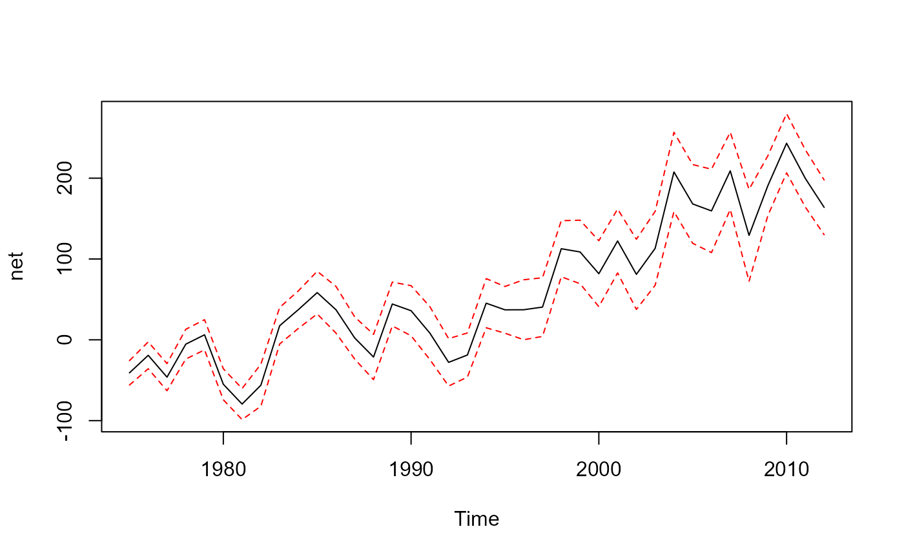
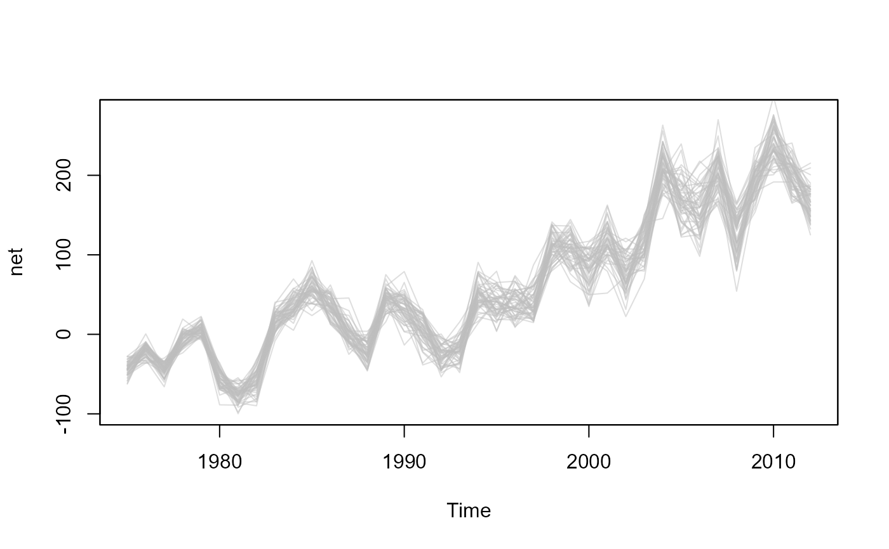
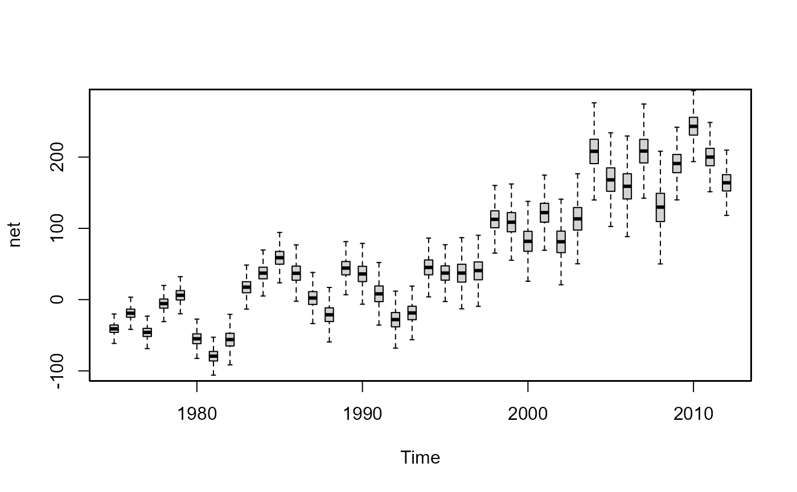
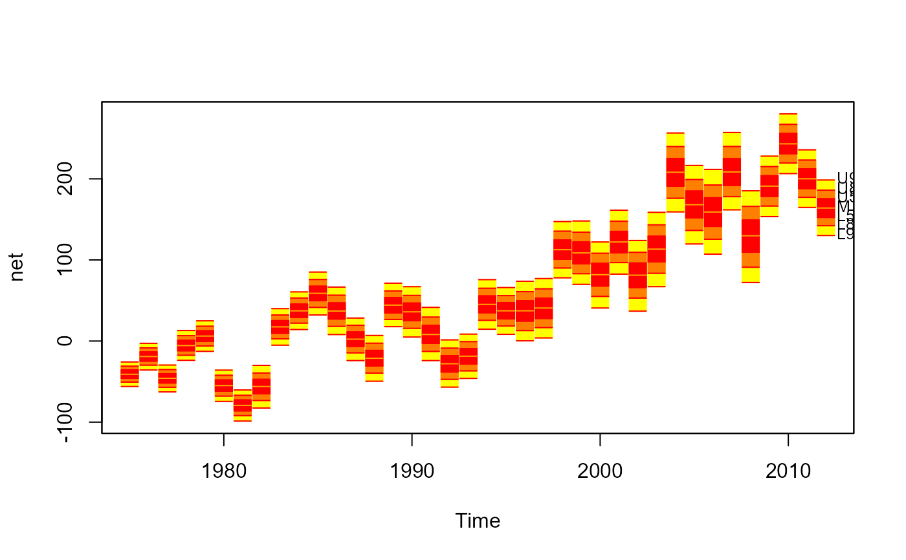

ONS International Passenger Survey Long-Term International Migration 1975-2012
ips.RdImmigration, emigration and net migration flow counts (and their confidence intervals) for the UK from the International Passenger Survey (IPS) conducted by the Office of National Statistics. Data formatted from the 2012 release of the Long-Term International Migration Statistics.
Usage
data(ips)Format
A data frame with 38 observations on the following 7 variables.
yeara numeric vector
imma numeric vector
imm.cia numeric vector
emia numeric vector
emi.cia numeric vector
neta numeric vector
net.cia numeric vector
Details
Data differ slightly from the final adjusted migration estimates published by the ONS, that take account of certain types of migration that the IPS doesn't pick up, such as asylum seekers, people migrating for longer or shorter than they thought they would, and migration over land to and from Northern Ireland.
Source
Annual statistics on flows of international migrants to and from the UK and England and Wales by the Office of National Statistics. Retrieved from "1.02 IPS Margins of Error, 1975-2012" spreadsheet.
Can not find copy of speadsheet on ONS website anymore, but there is a copy at https://github.com/guyabel/fanplot/tree/master/data-raw/
Examples
#standard plot
net<-ts(ips$net, start=1975)
plot(net, ylim=range(net-ips$net.ci, net+ips$net.ci))
lines(net+ips$net.ci, lty=2, col="red")
lines(net-ips$net.ci, lty=2, col="red")

#simulate values
ips.sim <- matrix(NA, nrow = 10000, ncol=length(net))
for (i in 1:length(net))
ips.sim[, i] <- rnorm(10000, mean = ips$net[i], sd =ips$net.ci[i]/1.96)
#spaghetti plot
plot(net, ylim=range(net-ips$net.ci, net+ips$net.ci), type = "n")
fan(ips.sim, style="spaghetti", start=tsp(net)[1], n.spag=50)

#box plot
plot(net, ylim=range(net-ips$net.ci, net+ips$net.ci), type = "n")
fan(ips.sim, style="boxplot", start=tsp(net)[1], llab=TRUE, outline=FALSE)

#box fan
plot(net, ylim=range(net-ips$net.ci, net+ips$net.ci), type = "n")
fan(ips.sim, style="boxfan", type="interval", start=tsp(net)[1])
